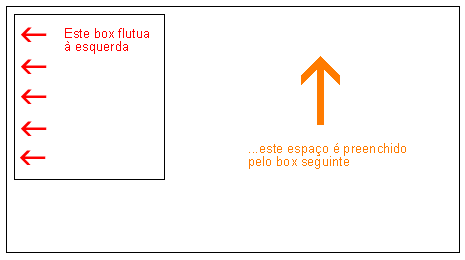
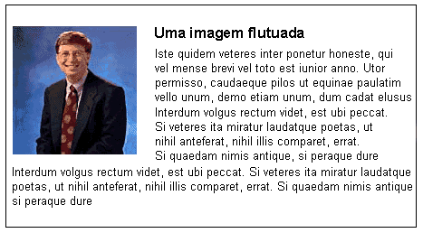

Lição 13: Flutuando elementos (floats)
Um elemento pode ser 'flutuado' à esquerda ou à direita com uso da propriedade float. Isto significa que o box e seu conteúdo são deslocados para a direita ou para a esquerda do documento (ou do bloco container) (ver lição 9 para descrição do Box model). A figura a seguir ilustra o princípio de float:

Se desejamos que um texto seja posicionado em volta de uma figura como mostrado abaixo, basta flutuarmos a imagem:

Como isto é feito ?
O HTML para o exemplo acima é mostrado a seguir:
<div id="picture">
<img src="bill.jpg" alt="Bill Gates">
</div>
<p>causas naturales et antecedentes,
idciro etiam nostrarum voluntatum...</p>
Para conseguir o efeito mostrado, basta definir uma largura para o box que o contém e declarar para ele float: left;
#picture {
float:left;
width: 100px;
}
Outro exemplo : colunas
Floats podem ser usados para construir colunas em um documento. Para criar as colunas estruturamos as colunas no código HTML usando <div> como mostrado a seguir:
<div id="column1">
<p>Haec disserens qua de re agatur
et in quo causa consistat non videt...</p>
</div>
<div id="column2">
<p>causas naturales et antecedentes,
idciro etiam nostrarum voluntatum...</p>
</div>
<div id="column3">
<p>nam nihil esset in nostra
potestate si res ita se haberet...</p>
</div>
A seguir definimos a largura de cada coluna, por exemplo 33%, e declaramos float: left; para cada uma das colunas:
#column1 {
float:left;
width: 33%;
}
#column2 {
float:left;
width: 33%;
}
#column3 {
float:left;
width: 33%;
}
float pode ser declarado left, right ou none.
A propriedade clear
A propriedade clear é usada para controlar o comportamento dos elementos que se seguem aos elementos floats no documento.
Por padrão, o elemento subsequente a um float, ocupa o espaço livre ao lado do elemento flutuado. Veja no exemplo acima que o texto deslocou-se automaticamente para o lado da foto de Bill Gates.
A propriedade clear pode assumir os valores left, right, both ou none. A regra geral é: se clear, for por exemplo definido both para um box, a margem superior deste box será posicionada sempre abaixo da margem inferior dos boxes flutuados que estejam antes dele no código.
<div id="picture">
<img src="bill.jpg" alt="Bill Gates">
</div>
<h1>Bill Gates</h1>
<p class="floatstop">causas naturales et antecedentes,
idciro etiam nostrarum voluntatum...</p>
Para evitar que o texto se posicione no espaço livre deixado pela foto do Bill Gates basta adicionar a seguinte regra CSS:
#picture {
float:left;
width: 100px;
}
.floatstop {
clear:both;
}
Sumário
Floats são muito úteis em várias situações e frequentemente usados em conjunto com posicionamento. Na próxima lição veremos como posicionar um box tanto de maneira relativa como absoluta.